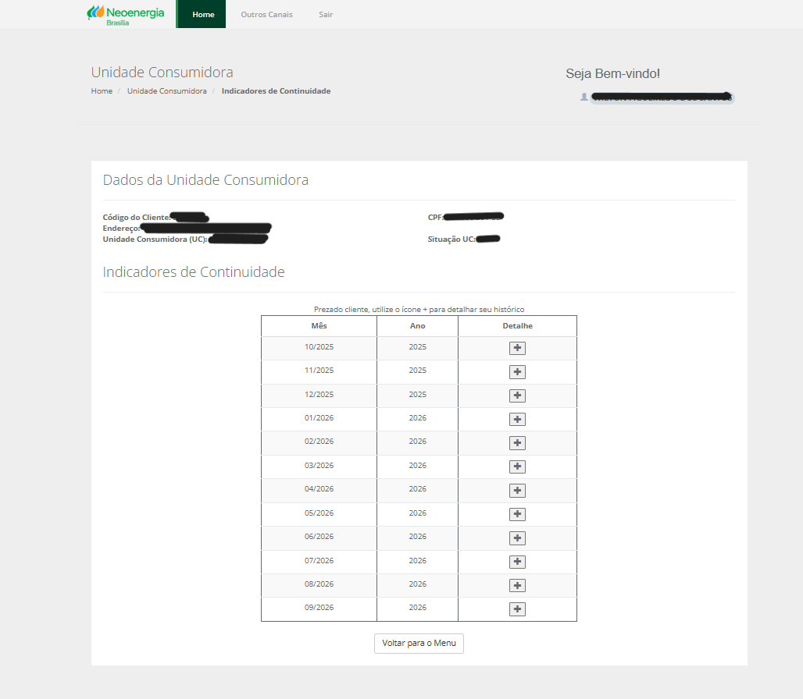
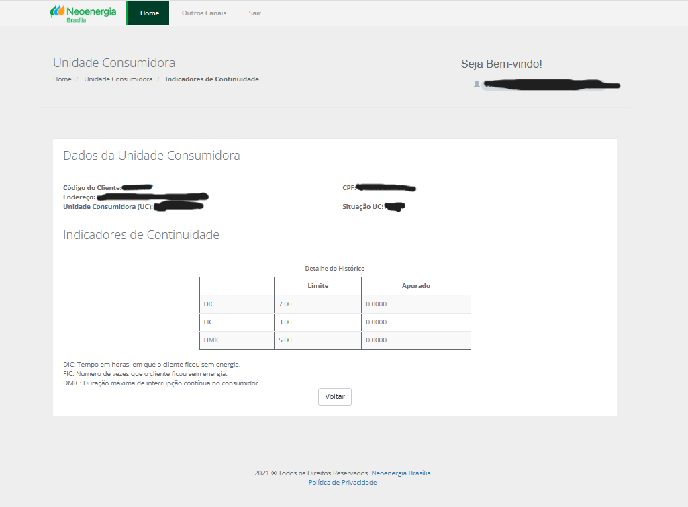
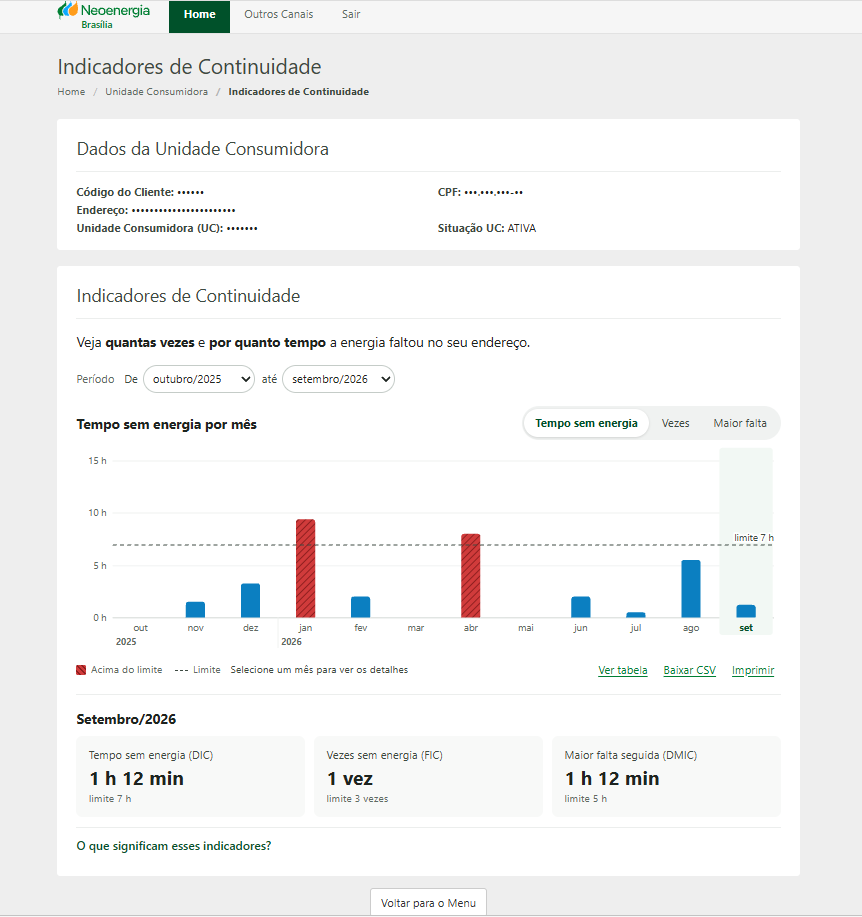
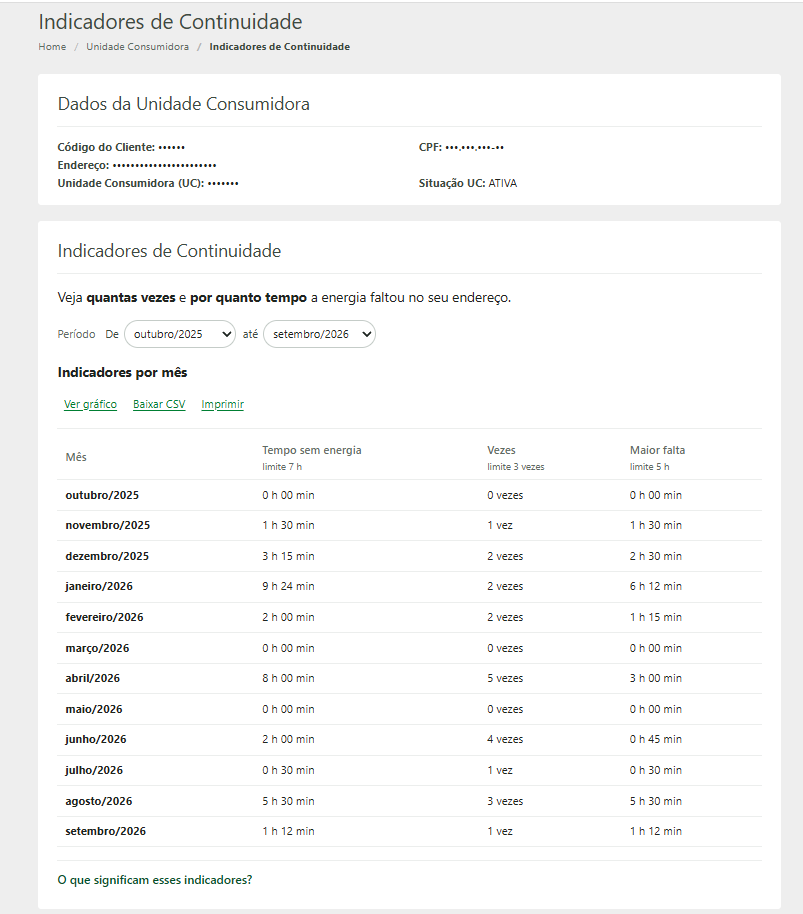

Justificativa¶
Projeto: Avaliação de Qualidade de Software — Agência Virtual Neoenergia Brasília
Origem: Resultados de G1 — Capacidade de Interação, oportunidade OM-01
Funcionalidade-alvo: Indicadores de Continuidade (DIC, FIC e DMIC)
Tipo de ação escolhida: Protótipo funcional Protótipo: abrir o protótipo navegável
1. Origem da ação¶
Esta página desenvolve a oportunidade OM-01, priorizada na seção Oportunidades de melhoria dos Resultados de G1.
2. Justificativa da escolha¶
O problema é de interface, linguagem e fluxo de navegação, e não técnico: não houve falha do sistema em nenhuma sessão. Por isso a ação escolhida é um protótipo funcional, pelos seguintes motivos:
- Ponto mais frágil da avaliação: com mais um erro na Tela B, M9 cairia para 70% e H9 não seria sustentada.
- Erro induzido pela tela: a confusão sempre com o histórico de consumo indica que o layout (tabela de Mês/Ano) e o texto ("detalhar seu histórico") levam a essa leitura. Isso se corrige no desenho da tela.
- Validação antes do código: o protótipo permite repetir o cenário U-03 com o mesmo protocolo, sem depender de acesso ao código da Neoenergia.
3. Ponto de partida¶
Hoje a funcionalidade tem duas telas, e o usuário precisa ir e voltar a cada mês consultado.
| Tela 1 — Lista de meses | Tela 2 — Detalhe do mês |
|---|---|
 |
 |
4. O que será criado¶
4.1 Conceito¶
Centralizar as duas telas em uma única página, que responda em poucos segundos as três perguntas do usuário:
- Para que serve esta página? Texto explicativo em linguagem simples.
- Está tudo bem com a minha energia? Cartões do mês selecionado com o valor e o limite de cada indicador.
- Quando e quanto fiquei sem energia? Gráfico dinâmico por mês, com o limite permitido e o detalhe na mesma tela.
4.2 Problemas atuais¶
| # | Problema da tela atual | O que será criado |
|---|---|---|
| P1 | Título "Indicadores de Continuidade" é jargão, sem subtítulo | Título original mantido, com subtítulo em linguagem simples que diz para que a página serve |
| P2 | Texto de apoio fala em "histórico", reforçando a confusão com o consumo | Texto "detalhar seu histórico" substituído por um subtítulo que fala de faltas de energia; a palavra "histórico" não aparece na página |
| P3 | Lista sem dados: só Mês, Ano e botão "+" | Gráfico e mês selecionado visíveis ao abrir a página |
| P4 | Colunas Mês e Ano redundantes | Eixo do gráfico com o mês abreviado e o ano agrupado |
| P5 | Comparar meses exige até 12 idas e voltas | Todos os meses no gráfico; detalhe na mesma página |
| P6 | Sem destaque para meses acima do limite | Coluna vermelha com hachura no gráfico |
| P7 | A tela de detalhe não informa o mês | Nome do mês selecionado como título dos cartões e período escolhido sempre visível nos campos "De" e "até" |
| P8 | Siglas como rótulo principal; explicação no rodapé | Nome do dia a dia como rótulo, sigla entre parênteses e uma seção de ajuda expansível |
| P9 | Números fora do padrão pt-BR ("7.00", "0.0000") | Horas em "h min", contagens em "vezes", vírgula decimal |
| P10 | Limite e Apurado sem interpretação | Valor e limite lado a lado, com card destacado quando acima do limite, e linha do limite no gráfico |
| P11 | Ausência de opções para exportar, imprimir ou salvar os dados apresentados | Ações de exportação em CSV e de impressão/salvamento em PDF, identificadas por texto |
4.3 Requisitos funcionais¶
| ID | Requisito | Resolve |
|---|---|---|
| RF-01 | Exibir em uma única página o título, o gráfico e os indicadores do mês selecionado, sem repetir informação | P3, P5 |
| RF-02 | Manter o título "Indicadores de Continuidade" e acrescentar subtítulo em linguagem simples sobre faltas de energia, sem a palavra "histórico" | P1, P2 |
| RF-03 | Mostrar, para o mês selecionado, o valor e o limite de cada indicador, destacando o valor acima do limite | P9, P10 |
| RF-04 | Permitir escolher o indicador exibido no gráfico | P5, P8 |
| RF-05 | Permitir escolher o período por mês inicial ("De") e final ("até") | P5 |
| RF-06 | Destacar meses acima do limite com cor e padrão visual | P6 |
| RF-07 | Atualizar cartões ao selecionar um mês, sem trocar de página, sempre informando o mês; ocultá-los na visualização em tabela | P7 |
| RF-08 | Oferecer visualização em tabela equivalente ao gráfico | P5 |
| RF-09 | Exportar os dados em CSV e imprimir/salvar em PDF, com ações identificadas por texto | P11 |
| RF-10 | Reunir em uma seção de ajuda a explicação das siglas e da compensação | P8 |
4.4 Requisitos não funcionais¶
| ID | Requisito | Critério verificável |
|---|---|---|
| RNF-01 | Acessibilidade | Conformidade com WCAG 2.2 nível AA (verificação com axe/Lighthouse e inspeção manual) |
| RNF-02 | Responsividade | Funcional em 320 px, 768 px e 1280 px de largura |
| RNF-03 | Formatação pt-BR | Vírgula decimal, horas em "h min", meses em português |
| RNF-04 | Independência de cor | Nenhuma informação transmitida apenas por cor |
| RNF-05 | Consistência visual | Cores e tipografia da identidade atual da Agência Virtual |
5. Protótipo Funcional¶
Nessa seção são apresentadas imagens da primeira versão do protótipo funcional, proposto como ação de melhoria.
| Formato gráfico | Formato tabela |
|---|---|
 |
 |
6. Referências¶
- Equipe do projeto. Resultados de G1 — Capacidade de Interação.
- ANEEL. PRODIST — Módulo 8: Qualidade do Fornecimento de Energia Elétrica. Disponível em: https://www.gov.br/aneel/pt-br/centrais-de-conteudos/procedimentos-regulatorios/prodist
- NIELSEN, J. 10 Usability Heuristics for User Interface Design. Nielsen Norman Group.
- W3C. Web Content Accessibility Guidelines (WCAG) 2.2.
- ISO 9241-11:2018. Ergonomics of human-system interaction — Usability: Definitions and concepts.
Histórico de Versões¶
| Versão | Data | Descrição da Alteração | Autor(a) |
|---|---|---|---|
| 1.0 | 21/11/2026 | Criação da página | Beatriz |
| 1.1 | 22/11/2026 | Proposta inicial da ação de melhoria para a funcionalidade Indicadores de Continuidade | Beatriz |
| 1.2 | 22/11/2026 | Implementação do protótipo | Beatriz |
| 1.3 | 23/11/2026 | Atualização da página com os problemas da tela atual, os requisitos do protótipo, o link para o protótipo e as imagens da tela anterior | Beatriz |
| 1.4 | 23/11/2026 | Adiciona imagens da primeira versão do protótipo | Beatriz |
| 1.5 | 23/11/2026 | Implementação de mudanças no protótipo com base nos dados coletados | Beatriz |